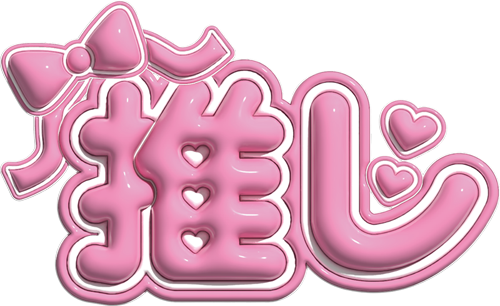
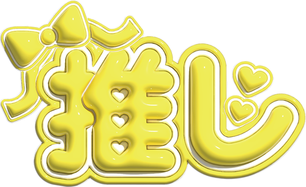

Myうちわ
1) 背景を決める
うちわのサイズ・型を選んでね👇
A4サイズレギュラー型
A3サイズ♡型
A3サイズ大型
写真で背景を作る
※ 画像は何度でも選び直せます。
メンバーカラーで背景を作る
2) デザイン編集スペース
※ 画像は1本の指で位置を動かせます。2本の指で大きさや向きを変えることができます。
写真の配置を確定
写真の配置をやり直す
決定 → プレビュー
デコレーション
3) デコレーション
テキスト
スタンプ
複製／削除
↩ ↪
レイヤー
決定→プレビュー
Aa
文字をうちわへ配置
Arial
ドットゴシック
Train One
手書き風
丸文字
M PLUS Rounded 太字
M PLUS 1p 太字
Kosugi Maru
Reggae One
RocknRoll One
Yomogi
Hachi Maru Pop
縁取りON/OFF
外側の縁の色：
外側の縁の太さ：
12%
アーチ文字にする
虹型（∩）
スマイル型（∪）
カーブ：
50
スタンプ
❤️
⭐
🎶


複製
削除
戻る
やり直し
背面へ
前面へ
決定 → プレビュー
決定 → プレビュー
4) 裏面を作る or 注文
画像を合成しています…（少しお待ちください）
🔁 裏面も作る
※ 表と裏の画像を２枚アップロードして送信してください
📝 注文フォームへ進む
画像を＜長押し👆＞して「画像を保存」してください
閉じる
📖 使い方ガイド
背景を決める
写真を選ぶか、メンバーカラー（背景色）を指定します。
写真を選んだ場合
アップロード後に指で位置やサイズ・角度を調整します。
写真だけでもOK
写真だけを配置して、そのままプレビューへ進めます。
文字やスタンプでデコレーション
好きなフォントでメッセージを入れたり、スタンプを配置できます。
プレビュー画像を保存
「決定 → プレビュー」で表示し、長押しして保存してください。
裏面を作成 or 注文
裏面を作る場合は「裏面も作る」を選択。
完成した画像を保存したら「注文フォームへ進む」から申し込めます。
OK